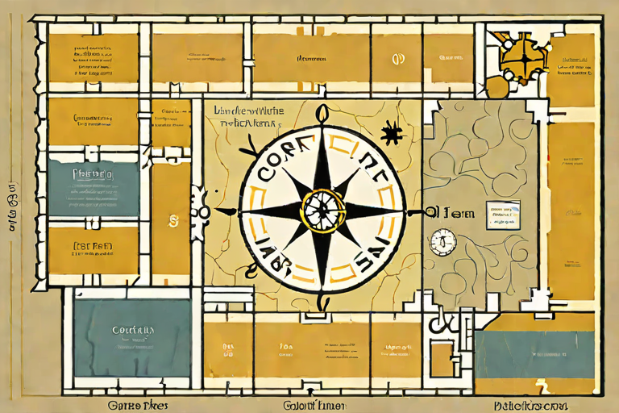

The Liminal Annex
No animals. No glass. The machine's other dreams — machinery after hours, small handmade gods, food it has never tasted, and facts it cannot picture. Dimmer, stranger, harder to leave.
ENTER →
You are hereThe legend is illegible.
- 01 After Hours The building keeps running with the lights off.
- 02 Things Made by Hand Small gods, assembled from whatever was nearby.
- 03 The Moment of Shattering The instant before it comes apart, held too long.
- 04 Specimens Catalogued, cross-sectioned, and slightly wrong.
- 05 Uncanny Edibles Food, rendered by something that has never eaten.
- 06 The Encyclopedia Can't Picture This It illustrates a title it was handed, confidently.
One way through. Begin at the first room.